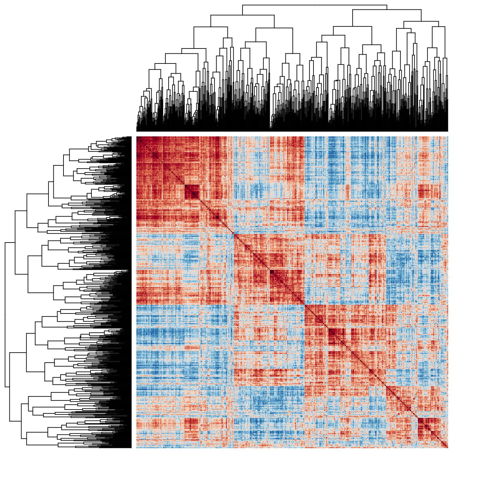
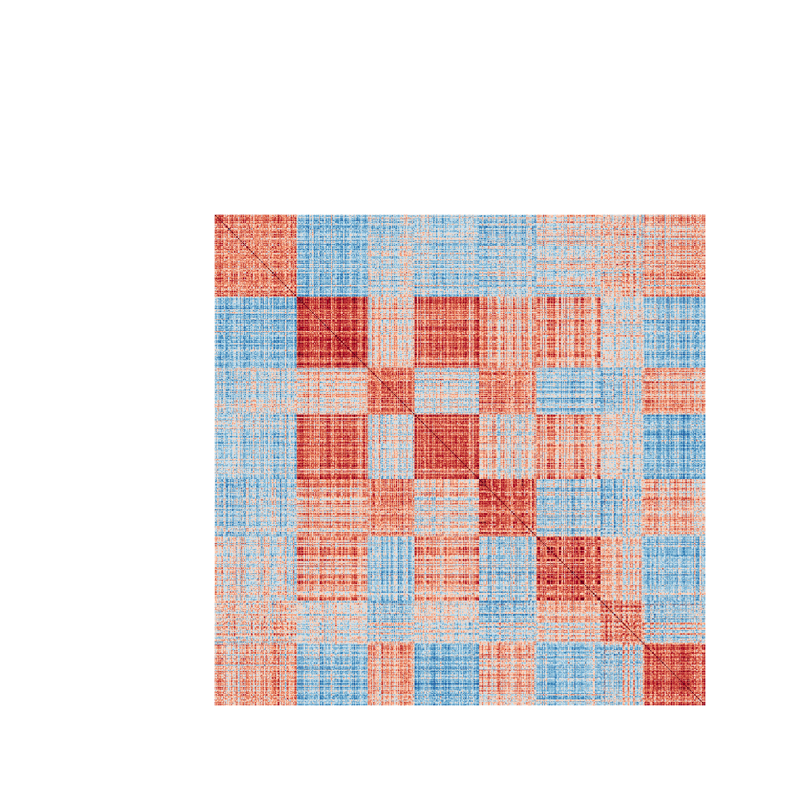
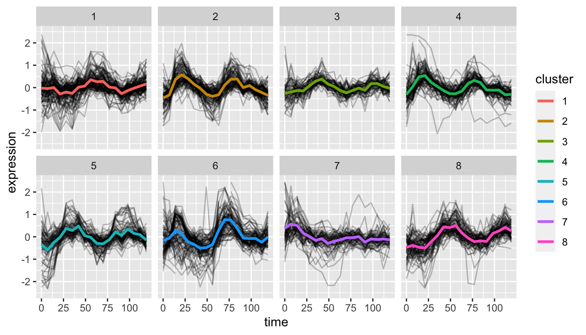
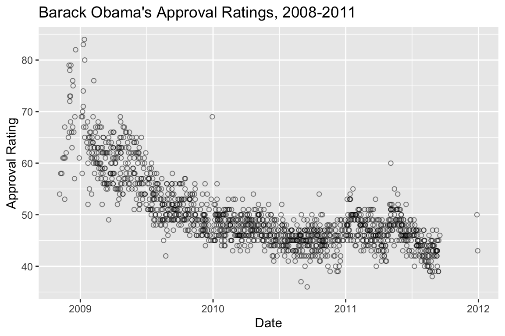

Chapter 16 Canonical Variates Analysis
Canonical Variates Analysis (CVA) is also referred to in the literature as “Linear Discrimination Analysis” (LDA). Confusingly, there is also a technique usualled called Canonical Correlation Analysis that is sometimes referred to as “Canonical Variates Analysis” in the literature.
Canonical variate analysis is used for analyzing group structure in multivariate data. Canonical variate axes are directions in multivariate space that maximally separate (discriminate) the pre-defined groups of interest specified in the data.
Unlike PCA, canonical variate axes are not, in general, orthogonal in the space of the original variables.
16.1 Libraries
library(tidyverse)
library(cowplot)
library(broom)
library(magrittr)16.2 Discriminant Analysis in R
The function lda(), found in the R library MASS, carries out linear discriminant analysis (i.e. canonical variates analysis).
library(MASS)
##
## Attaching package: 'MASS'
## The following object is masked from 'package:dplyr':
##
## select
lda.iris <-lda(Species ~ Sepal.Length + Sepal.Width + Petal.Length + Petal.Width,
iris, prior=c(1,1,1)/3)
lda.iris
## Call:
## lda(Species ~ Sepal.Length + Sepal.Width + Petal.Length + Petal.Width,
## data = iris, prior = c(1, 1, 1)/3)
##
## Prior probabilities of groups:
## setosa versicolor virginica
## 0.3333333 0.3333333 0.3333333
##
## Group means:
## Sepal.Length Sepal.Width Petal.Length Petal.Width
## setosa 5.006 3.428 1.462 0.246
## versicolor 5.936 2.770 4.260 1.326
## virginica 6.588 2.974 5.552 2.026
##
## Coefficients of linear discriminants:
## LD1 LD2
## Sepal.Length 0.8293776 0.02410215
## Sepal.Width 1.5344731 2.16452123
## Petal.Length -2.2012117 -0.93192121
## Petal.Width -2.8104603 2.83918785
##
## Proportion of trace:
## LD1 LD2
## 0.9912 0.0088When using lda() we specify a formula, with the grouping variable on the left and the quantitative variables on which you want to bases the discriminant axes, on the left. The prior argument given in the lda() function call isn’t strictly necessary because by default the lda() function will assign equal probabilities among the groups. However I included this argument call to illustrate how to change the prior if you wanted. The output give some simple summary statistics for the group means for each of the variables and then gives the coefficients of the canonical variates. The `Proportion of trace’ output above tells us that 99.12% of the between-group variance is captured along the first discriminant axis.
16.2.1 Shorthand Formulae in R
You’ve encountered the use of model formulae in R throughout the course. Relevant to our current example is a shorthand way for specifying multiple variables in a formula. In the example above we called the |lda()| function with a formula of the form:
Species ~ Sepal.Length + Sepal.Width + ....Writing the names of all those variables is tedious and error prone and would be unmanageable if we were analyzing a data set with tens or hundreds of variables. Luckily we can use the shorthand name . to specify all other variables in the data frame except the variable on the left. For example, we can rewrite the lda() call above as:
iris.lda <- lda(Species ~ ., data = iris)16.2.2 Working with the output of lda()
The object returned by lda() is of class “lda” with a number of components (see ?lda for details):
class(iris.lda)
## [1] "lda"
names(iris.lda)
## [1] "prior" "counts" "means" "scaling" "lev" "svd" "N"
## [8] "call" "terms" "xlevels"The scaling component gives the coefficients of the CVA that we can use to calculate the “scores” of the observations in the space of the canonical variates.
iris.lda$scaling
## LD1 LD2
## Sepal.Length 0.8293776 0.02410215
## Sepal.Width 1.5344731 2.16452123
## Petal.Length -2.2012117 -0.93192121
## Petal.Width -2.8104603 2.83918785The columns LD1 and LD2 give the coffiecients, \(\bf{a}\), that we can use in the formula \(\bf{y}_\text{discrim} = \bf{Xa}\)
iris.sub <-
iris %>%
dplyr::select(-Species) %>% # drop Species column
as.matrix # cast to matrix for calculations
# calculate CV scores
CVA.scores <- iris.sub %*% iris.lda$scaling
# create data frame with scores
iris.CV <- data.frame(CVA.scores)
iris.CV$Species <- iris$SpeciesHaving calculated the CVA scores we can now generate a plot:
iris.cva.plot <-
ggplot(iris.CV, aes(x = LD1, y = LD2)) +
geom_point(aes(color=Species, shape=Species), alpha=0.5) +
labs(x = "CV1", y = "CV2") +
coord_fixed(ratio=1) # keep the unit scaling of the plot fixed at 1
iris.cva.plot
Since most of the between group variation is captured by CV1, a density plot is an alternative in this case:
ggplot(iris.CV, aes(x = LD1)) +
geom_density(aes(color=Species)) +
labs(x = "CV1")
The density plot of CV1 makes it clear how well the first canonical variate does in separating the three groups.
16.3 Estimating confidence regions for group means in CVA
I stated in lecture that for the canonical variate diagram we can estimate the \(100(1-\alpha)\) confidence region for a group mean as a circle centered at the mean having a radius \((\chi^{2}_{\alpha,r}/n_i)^{1/2}\) where \(r\) is the number of canonical variate dimensions considered.
Using similar reasoning the \(100(1-\alpha)\) “tolerance regions” for the whole population is given by a hypersphere centered at the mean with radius \((\chi^{2}_{\alpha,r})^{1/2}\). These tolerance regions are the regions in the CVA space where we expect approximately \(100(1-\alpha)\) percent of samples belong to a given group to be found.
To calculate these confidence regions you could look up the appropriate value of the the \(\chi^2\) distribution in a book of statistical tables, or we can use the |qchisq()| function which gives the inverse cumulative probability distribution for the \(\chi^2\) function:
chi2 = qchisq(0.05,2, lower.tail=FALSE)
chi2
## [1] 5.991465
CIregions.mean.and.pop <-
iris.CV %>%
group_by(Species) %>%
summarize(CV1.mean = mean(LD1),
CV2.mean = mean(LD2),
mean.radii = sqrt(chi2/n()),
popn.radii = sqrt(chi2))
CIregions.mean.and.pop
## # A tibble: 3 x 5
## Species CV1.mean CV2.mean mean.radii popn.radii
## <fct> <dbl> <dbl> <dbl> <dbl>
## 1 setosa 5.502 6.877 0.3462 2.448
## 2 versicolor -3.930 5.934 0.3462 2.448
## 3 virginica -7.888 7.174 0.3462 2.44816.3.1 Drawing the CVA confidence regions
Surprisingly, ggplot2 has no built-in functions for drawing circles, despite having geom_rect() and geom_polygon() functions. Instead we turn to a package called ggforce which provides a convenient geom_circle() function as well as a number of other useful extensions of ggplot. Install “ggforce” through the normal package installation mechanism and then load it.
library(ggforce)We can then use ggforce::geom_circle() to draw confidence regions for the mean and population in our 2D CVA plot:
iris.cva.plot2 <-
iris.cva.plot +
geom_circle(data = CIregions.mean.and.pop,
mapping = aes(x0 = CV1.mean, y0 = CV2.mean, r = mean.radii),
inherit.aes = FALSE) +
geom_circle(data = CIregions.mean.and.pop,
mapping = aes(x0 = CV1.mean, y0 = CV2.mean, r = popn.radii),
linetype = "dashed",
inherit.aes = FALSE)
iris.cva.plot2
Let’s put the finishing touch on our plots by adding some color coded rug plots to the first CV axis.
iris.cva.plot2 +
geom_rug(aes(color=Species),
sides = "b")
16.4 Calculating the Within and Between Group Covariance Matrices
The lda() function conveniently carries out the key steps of a canonical variates analysis for you. However, what if we wanted some of the intermediate matrices relevant to the analysis such as the within- and between group covariances matrices? The code below shows you how to calculate these:
nobs <- nrow(iris)
ngroups <- nlevels(iris$Species)
# calculate deviations around grand mean
tot.deviates <-
iris %>%
dplyr::select(-Species) %>%
# review the course notes on dplyr to remind
# yourself about how the mutate_all() and funs() fxns work
mutate_all(funs(. - mean(.))) %>%
as.matrix
# Total SSQ and covariance matrix
ssq.tot <- t(tot.deviates) %*% tot.deviates
cov.tot <- ssq.tot/nobs
# calculate deviations around group means
win.deviates <-
iris %>%
group_by(Species) %>%
mutate_all(funs(. - mean(.))) %>%
ungroup %>%
dplyr::select(-Species) %>%
as.matrix
## `mutate_all()` ignored the following grouping variables:
## Column `Species`
## Use `mutate_at(df, vars(-group_cols()), myoperation)` to silence the message.
# Within group SSQ and covariance
ssq.win <- t(win.deviates) %*% win.deviates
cov.win <- ssq.win/(nobs - ngroups)
# Between group deviates
btw.deviates <-
iris %>%
group_by(Species) %>%
summarize_all(mean) %>%
dplyr::select(-Species) %>%
mutate_all(funs(. - mean(.))) %>%
as.matrix
# Between group SSQ and covariance
ssq.btw <- ngroups * t(btw.deviates) %*% btw.deviates
cov.btw <- ssq.btw/(ngroups-1)16.4.1 Recapitulating the CVA analysis of lda()
If we wanted to recapitulate the calculations that the lda() function carries out, we can do so based on the within- and between-group covariance matrices we estimated in the previous code block:
# Cacluate the eigenvectors of W^{-1}B
WinvB = solve(cov.win) %*% cov.btw
eigin.WinvB = eigen(WinvB)
cva.vecs <- Re(eigin.WinvB$vectors)[,1:ngroups-1]
cva.vals <- Re(eigin.WinvB$values)[1:ngroups-1]
unscaled.scores <- win.deviates %*% cva.vecs
# figure out scaling so group covariance matrix is spherical
scaling <- diag(1/sqrt((t(unscaled.scores) %*% unscaled.scores)/(nobs-ngroups)))
# compare to "scaling" component object returned by lda()
scaled.cva.vecs <- cva.vecs %*% diag(scaling)
cva.scores <- iris.sub %*% scaled.cva.vecs
colnames(cva.scores) <- c("CV1","CV2")
cva.scores <- as.data.frame(cva.scores)
cva.scores$Species <- iris$SpeciesLet’s plot the set of CVA scores that we calculated “by hand” to visually confirm our analysis produced similar results to the lda() function:
ggplot(cva.scores, aes(x = CV1, y = CV2)) +
geom_point(aes(color=Species, shape=Species)) +
coord_fixed(ratio=1)
Note that the CVA ordination above is “flipped” left-right relative to our earlier CVA figures. Canonical variates, like principal components, are identical with respect to reflection.